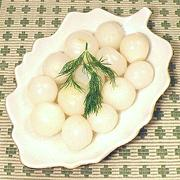

|
Pickled OnionsFinland (and there abouts) - Hillosipulit | ||||
| Makes: Effort: Sched: DoAhead: |
1 # ** 5 days Must |
A popular appetizer everywhere, pickled onions are easy to make but need time to mature. Use the smallest boiling onions you can find - less than 1-1/4 inch is best. | |||
|
2 3 1/4 ------ 2-1/2 1/2 3 1/2 1/8 12 ------ |
# c c --- c c T in --- |
Onions, tiny (1) Water Sea Salt -- Marinade Vinegar (2) Water Sugar (3) Blade Mace Ginger Peppercorns ------------- |
Make - (5 days - 45 min work)
|